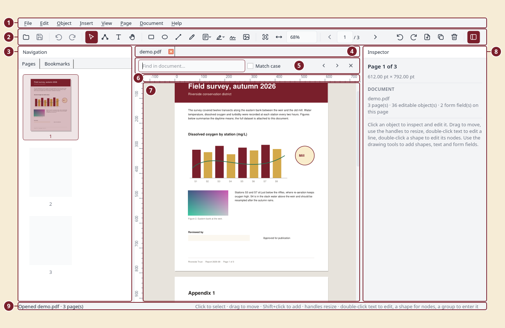

User guide
Quirewright edits the content of PDF pages the way a vector drawing program edits shapes, and manages pages, forms and comments the way a PDF tool does. This guide walks through the interface and every feature.
The window

- Menu bar.
- Toolbar: file, undo/redo, the selection, node, text and hand tools, drawing tools, form fields, comments, zoom and page navigation, and the panel and theme toggles.
- Navigation panel with the Pages and Bookmarks tabs.
- Document tabs, one per open file.
- Find bar (Ctrl+F).
- Rulers.
- Page canvas.
- Inspector.
- Status bar.
- Tabs: every open document has its own tab above the canvas. Ctrl+Tab and Ctrl+Shift+Tab switch, the × closes (asking to save first), and files dropped on the window open in new tabs.
- Rulers frame the canvas in your preferred units (Preferences). Drag from a ruler onto the page to create a guide.
- Navigation (left): page thumbnails you can multi-select and drag to reorder, and a Bookmarks tab for the document outline.
- Canvas (centre): all pages in one scrolling column (or one page at a time with View › Continuous Scrolling off), rendered exactly as other viewers render it. Everything on it can be selected; the page you click or scroll to becomes the active page for editing.
- Inspector (right): shows details for whatever is selected and lets you change them. With nothing selected it shows page and document information, or the style for new objects when a drawing tool is active.
Both side panels can be hidden from the View menu or the toolbar.
Opening, saving, security
- Open: File › Open, drag a PDF onto the window, the welcome screen, or
pass a path on the command line (
quirewright file.pdf). - Encrypted files ask for their password.
- Save writes to the same file atomically (a temporary file is written first and then swapped in). Save As writes elsewhere.
- Save Reduced Size Copy rewrites images at up to 150 dpi, recompresses streams and removes unused objects.
- Document › Security sets an open password (needed to open the file), an owner password (needed to change permissions) and the permissions granted to readers. Choose "No password or restrictions" to remove existing security. Changes take effect when you save.
- Document › Properties edits title, author, subject, keywords, creator, producer and dates, and shows file details (PDF version, size, encryption, attachments, whether the file contains a form).
Selecting and editing objects
Use the Select tool (S):
| Action | How |
|---|---|
| Select | click an object; Shift+click adds or removes; drag on empty space for a rubber band; Ctrl+A selects all |
| Move | drag the selection, or use the arrow keys (Shift = 10 pt) |
| Resize | drag a handle; corners keep the aspect ratio, hold Shift to stretch freely |
| Rotate | enter an angle in the Inspector, or Object › Rotate Selection 90° |
| Exact geometry | type X, Y, W, H in the Inspector (units are configurable in Preferences) |
| Colours | Inspector › Fill & Stroke: toggle fill/stroke, pick colours, set stroke width |
| Duplicate | Ctrl+Shift+D |
| Order | Object › Bring to Front / Send to Back |
| Align / distribute | Object › Align (a single object aligns to the page) |
| Flip | Object › Flip Horizontal / Vertical |
| Copy text | Ctrl+C copies the text of selected text objects |
| Delete | Delete or Backspace |
Everything is undoable (Ctrl+Z / Ctrl+Shift+Z).
Groups
Select several objects and press Ctrl+G to group them. A group is stored as a PDF form XObject, so it is a real part of the file and survives in any viewer. Groups move, resize and duplicate as one object. Ctrl+Shift+G ungroups (the objects are placed back into the page).
To change something inside a group, or inside any form XObject that a document already contains (logos, imported drawings, headers and footers), double-click it or press Ctrl+Enter to enter it. The rest of the page is dimmed, the Inspector and all tools now work on the group's own objects, and you can even add new shapes or text to it. Press Esc, double-click empty space, or use Object › Exit Group to leave. Note that a form XObject reused on several pages changes everywhere it is used.
Editing text
Double-click a line of text, press Enter or F2 with it selected, or use the Text tool (T) and click it. An inline editor opens with the whole visual line (PDFs often split lines into several pieces; the editor merges them). Enter applies, Esc cancels. The Inspector also offers a text field, size and colour.
Paragraphs. Select any line and press Ctrl+E (or Edit › Edit Paragraph, or the Edit paragraph… button in the Inspector) to edit all the lines of the paragraph at once in a multi-line editor. Ctrl+Enter applies: the text is re-wrapped to the paragraph's original width and line spacing.
Text is re-encoded with the document's own font whenever possible. Embedded fonts are usually subsets that only contain the glyphs already used in the file; if you type a character the subset lacks, the editor substitutes a built-in font with the same weight and style and tells you in the status bar.
Editing shapes (nodes)
Double-click a shape, or select it and press N, to enter the Node tool. Square handles are anchor points, circles are bezier control points; drag them. Esc returns to the Select tool.
Creating objects
| Tool | Key | Use |
|---|---|---|
| Rectangle | R | drag; Shift for a square |
| Ellipse | E | drag; Shift for a circle |
| Line | L | drag; Shift snaps to 45° |
| Pen | P | click for corner points, click-and-drag for smooth curves (the drag sets the handle); Enter or double-click finishes, clicking the first point closes the shape; Esc cancels |
| Text | T | click on empty space for a single line (Enter applies), or drag a box for wrapped multi-line text (Ctrl+Enter applies) |
| Image | Ctrl+Shift+M | choose a file; it is placed in the middle of the view, then move/resize it |
With a drawing tool active and nothing selected, the Inspector shows the New object style: fill, stroke, width, font, size and text colour.
Pages
Right-click a thumbnail or use the Page menu:
- Rotate 90°/180°, delete, duplicate, move up/down, reverse the order, or drag thumbnails to reorder (multi-select works).
- Insert Blank Page offers common paper sizes; Insert Pages from File takes any page range from another PDF.
- Extract Pages saves chosen pages to a new file; Split Document writes the document as files of N pages each.
- Crop: use the Crop tool (C) and drag a rectangle, or Crop by Margins. Cropping hides content outside the box; Reset Crop restores it.
- Add Page Numbers and Add Watermark stamp text on a range of pages.
- Page Labels sets how viewers number pages (for example i, ii, iii for the front matter and 1, 2, 3 afterwards, or a prefix such as A-1). Labels are shown under the thumbnails.
- Export › Page as Image writes PNG, JPEG or SVG; Export › Text writes the plain text of all pages.
Forms
Use the form-field toolbar button (F) or Insert › Form Field to add text fields, checkboxes, radio buttons, dropdowns, list boxes and push buttons: drag to size the field, or click for a default size. Fields are selected, moved, resized and deleted like other objects. The Inspector edits the field's name, value, options, caption, font size, colours, border and flags (read-only, required, multiline). Filling a form is just selecting a field and typing its value.
Calculations and formats. For text fields and dropdowns the Inspector has a Calculation & format section: calculate the field as the sum, product, average, minimum or maximum of other fields (type their names), format it as a number (decimals, thousands separator, currency), a percentage or a date, require a value in a range, or write your own JavaScript. These are stored as standard Acrobat-compatible field actions so other viewers run them; the editor itself evaluates the built-in calculations as soon as you change a value, so the form previews correctly here too.
Document › Flatten bakes fields and comments into the page content.
Comments
Insert › Comment (or the comment toolbar button): Highlight, Underline and Strike Out work by dragging a rectangle over words; Sticky Note places a note where you click. Select a comment to edit its author, text, icon, colour and opacity in the Inspector, move notes by dragging, and delete with the Delete key. Set your name under Edit › Preferences so new comments carry it.
Snapping, guides and grid
While you move, resize, draw or edit nodes, the editor snaps to the page edges and centre, to the edges and centres of other objects, to guides and, if enabled, to a grid. A red dashed line shows what you snapped to. Hold Alt to move freely. View › Snapping lets you switch snapping as a whole, snapping to objects, and snapping to the grid.
- Guides: drag out of the top ruler for a horizontal guide or out of the left ruler for a vertical one. Drag a guide to move it; drag it off the page to delete it. View › Snapping › Clear Guides removes them all. Guides belong to the page they were created on and are not saved in the PDF.
- Grid: View › Show Grid draws it; Snap to Grid snaps to it. The spacing and the snap distance are set in Preferences.
Find
Ctrl+F opens the find bar. Matches are highlighted on the page; Enter and Shift+Enter move between them across all pages.
Resources and attachments
Document › Resources lists every image (with preview), font (with its type and whether it is embedded) and attachment in the file. Select rows and extract them to disk; attach new files or remove attachments from the same dialog, or use Document › Attach File.
Digital signatures
Document › Sign Document adds a digital signature. You need a certificate with its private key in a PKCS#12 file (.p12/.pfx); if you don't have one, Create new… makes a self-signed certificate (readers will see your name and that the file is unchanged since signing, but a self-signed certificate is not vouched for by a certificate authority, so use one from a trusted provider when legal weight matters). Choose a reason and location, and either an invisible signature, a visible stamp placed in a corner of the current page, or an existing signature field.
Signature fields. The Signature Field tool (G, on the toolbar next to the comment tools) places a visible "Sign here" box: drag it out or click for a default size. The Inspector sets its caption and colours, and Sign this field… signs the document into it; other viewers show the same placeholder and let their users sign there too. Once signed, the box shows the signature stamp instead. Signing writes a new file and opens it. Signing is always the last step: saving any later edit rewrites the file and invalidates the signature, and the editor warns you before that happens.
Document › Signatures lists every signature with its status: whether the document is intact, whether later changes were appended, and whether the signer's certificate is trusted. Trust a certificate… adds a certificate file to your personal trust store so signatures made with it show as trusted.
Recognizing text in scans (OCR)
Document › Recognize Text runs the Tesseract engine on scanned pages and adds an invisible text layer on top of the image: the page looks exactly the same but becomes searchable, selectable and copyable, and the words show up as (dashed) text objects you can inspect. Choose the language(s) and resolution; pages that already contain text are skipped by default. Tesseract and its language packs must be installed on the system (the dialog explains how if they are missing).
Redaction
Document › Redact Area: drag a rectangle; after confirmation the text and images inside it are removed from the page (not just covered) and the area is painted black. This is destructive by design; undo is available until you save.
Language
Edit › Preferences › Language switches the interface language (restart to
apply). Translations live in quirewright/locale/<lang>/LC_MESSAGES; run
scripts/extract_strings.py to refresh the template and
scripts/compile_catalogs.py after editing a .po file. German, French and
Spanish catalogues are included; contributions for other languages are
welcome.
Preferences
Edit › Preferences: theme (system, light, dark), units for the Inspector (points, millimetres, centimetres, inches), whether stroke widths scale when you resize objects, your name for comments, and the zoom used when a file is opened.
Keyboard shortcuts
Help › Keyboard Shortcuts lists everything. The most used:
| Keys | Command |
|---|---|
| Ctrl+O / Ctrl+S / Ctrl+P | open / save / print |
| Ctrl+Z / Ctrl+Shift+Z | undo / redo |
| S, N, T, H | Select, Node, Text, Hand tools |
| R, E, L, P | Rectangle, Ellipse, Line, Pen tools |
| F, C, G | Form field, Crop, Signature field tools |
| Ctrl+F | find |
| PgUp / PgDn | previous / next page |
| Ctrl+0 / Ctrl+1 / Ctrl+2 | fit page / actual size / fit width |
| Ctrl+I | document properties |
| Ctrl+Shift+O | resources (images, fonts, attachments) |
| Ctrl+/ | keyboard shortcut reference |
| Ctrl+Shift+D | duplicate selection |
| Ctrl+G / Ctrl+Shift+G | group / ungroup |
| Ctrl+Enter / Ctrl+Shift+Enter | enter / exit a group |
| Ctrl+J | go to page |
| Ctrl+E | edit paragraph |
| Ctrl+Shift+C | toggle continuous scrolling |
| Ctrl+Tab / Ctrl+Shift+Tab | next / previous document tab |
| Ctrl+Shift+U | show rulers |
| Ctrl+' | show grid |
| Ctrl+Shift+; | snapping on/off (hold Alt to bypass while dragging) |
| Ctrl+Shift+] / [ | bring to front / send to back |
| Ctrl+R / Ctrl+Shift+R | rotate page clockwise / counter-clockwise |
| Esc | cancel editing, or back to the Select tool |
Installing a launcher (Linux)
packaging/install-desktop.sh
installs a desktop entry and icon for the current user so the editor appears in application menus and can be chosen for PDF files.